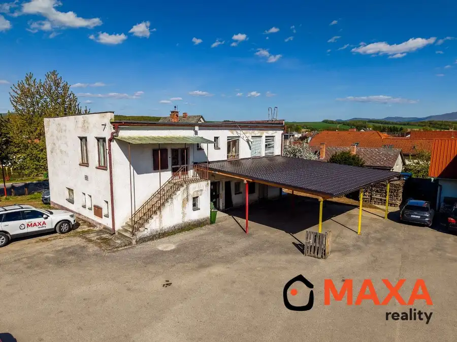
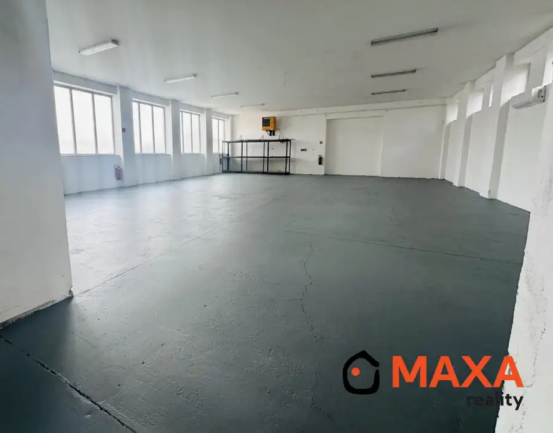
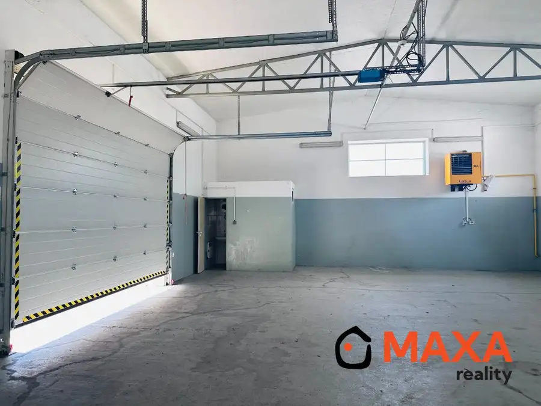
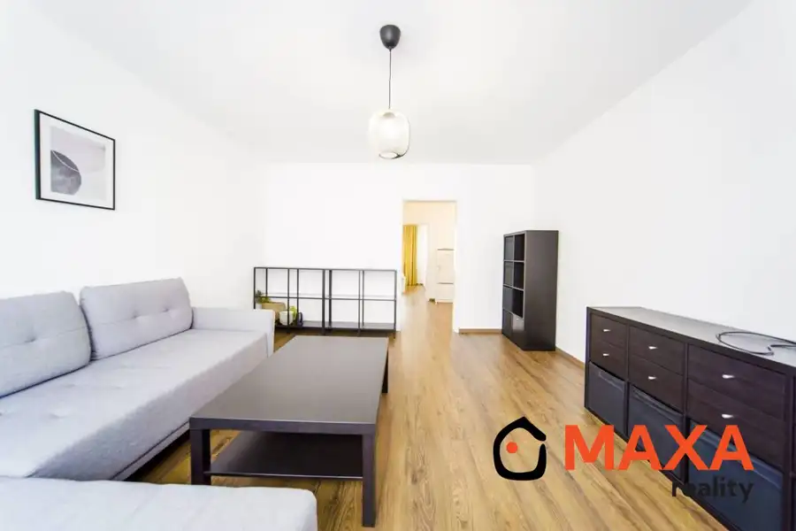
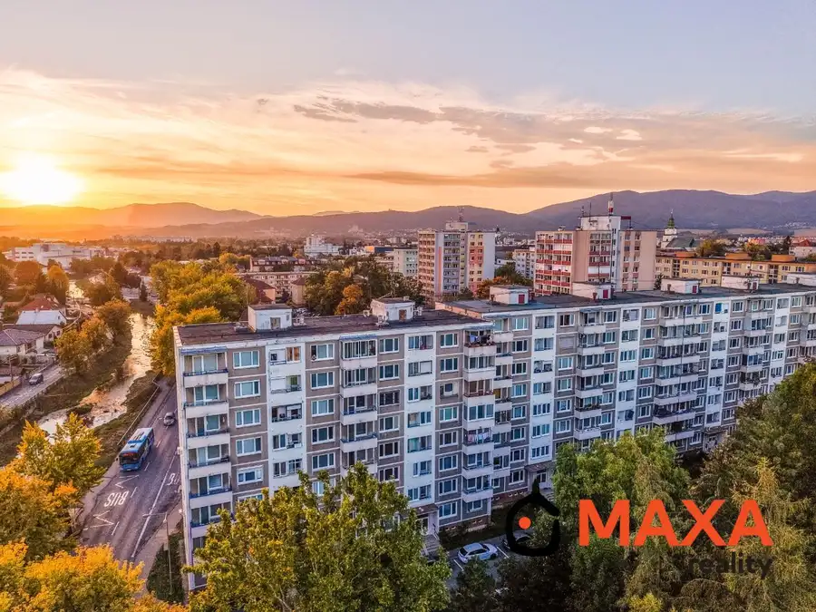

Aktuálna ponuka
6 nehnuteľností, predovšetkým komerčné priestory, byty. Každá má vlastnú stránku s fotkami, popisom a mapou.
Prezrieť ponukuAlexandra DadíkováRealitná maklérka
Realitná maklérka · MAXA REALITY
Predaj a prenájom nehnuteľností · Prievidza, Diviacka Nová Ves, Handlová




BytNové10 Cena dohodouNA PRENÁJOM Trojizbový byt sídlisko Sever, Prievidza Prievidza 3-izbový64 m²2. podlažie Hľadáte príjemné bývanie v pokojnej lokalite s kompletnou občianskou vybavenosťou? Ponúkame vám na prenájom moderne zrekonštruovaný 3-izbový byt na…
BytRezervované Cena dohodou3,5 - izbový byt, Nábr. sv. Cyrila, Prievidza Prievidza 3-izbový82 m²2. podlažie Ponúkame na predaj priestranný 3-izbový byt s celkovou výmerou 82 m², nachádzajúci sa na 2. poschodí zo 7 v bytovom dome s výťahom.Byt je okrem…Tomuto výberu zatiaľ nezodpovedá žiadna ponuka. Napíšte mi, čo hľadáte.
Volám sa Alexandra Dadíková. Som realitná maklérka kancelárie MAXA REALITY a pôsobím predovšetkým v lokalitách Prievidza, Diviacka Nová Ves a Handlová (Trenčiansky kraj).
6 nehnuteľností, predovšetkým komerčné priestory, byty. Každá má vlastnú stránku s fotkami, popisom a mapou.
Prezrieť ponukuPrievidza, Diviacka Nová Ves, Handlová a okolie. Ponuku si môžete prezrieť podľa lokality.
Nehnuteľnosti v lokaliteOdhad trhovej ceny, príprava prezentácie, obhliadky, zmluvy a odovzdanie nehnuteľnosti.
Dohodnúť stretnutieKaždý špendlík je jedna nehnuteľnosť z mojej ponuky. Kliknite a pozrite sa.
© prispievatelia OpenStreetMap
Na čo sa pýtate najčastejšie, skôr než sa stretneme.
Odhad trhovej ceny vychádza z aktuálnych ponúk a predajov v lokalite, nie z cenníkových tabuliek. Podmienky Vám poviem pri prvom telefonáte.
Najprv obhliadka a odhad ceny, potom príprava prezentácie (fotografie, popis, inzercia), obhliadky so záujemcami, rezervačná zmluva, kúpna zmluva, návrh na vklad do katastra a odovzdanie nehnuteľnosti. O každom kroku viete vopred.
Najrýchlejšie cez WhatsApp alebo telefón. Termín stretnutia alebo obhliadky dohodneme podľa Vás.